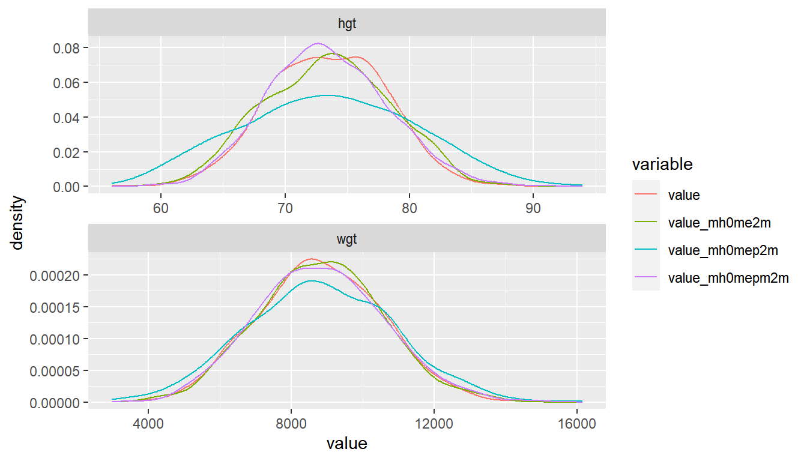

Chapter 6 Nonlinear Regression
6.1 Logit Regression
6.1.1 Binary Logit
Go back to fan’s REconTools Package, R4Econ Repository, or Intro Stats with R Repository.
Data Preparation
df_mtcars <- mtcars
# X-variables to use on RHS
ls_st_xs <- c('mpg', 'qsec')
ls_st_xs <- c('mpg')
ls_st_xs <- c('qsec')
ls_st_xs <- c('wt')
ls_st_xs <- c('mpg', 'wt', 'vs')
svr_binary <- 'hpLowHigh'
svr_binary_lb0 <- 'LowHP'
svr_binary_lb1 <- 'HighHP'
svr_outcome <- 'am'
sdt_name <- 'mtcars'
# Discretize hp
df_mtcars <- df_mtcars %>%
mutate(!!sym(svr_binary) := cut(hp,
breaks=c(-Inf, 210, Inf),
labels=c(svr_binary_lb0, svr_binary_lb1)))6.1.1.1 Logit Regresion and Prediction
logit regression with glm, and predict using estimation data. Prediction and estimation with one variable.
# Regress
rs_logit <- glm(as.formula(paste(svr_outcome, "~", paste(ls_st_xs, collapse="+")))
,data = df_mtcars, family = "binomial")
summary(rs_logit)##
## Call:
## glm(formula = as.formula(paste(svr_outcome, "~", paste(ls_st_xs,
## collapse = "+"))), family = "binomial", data = df_mtcars)
##
## Deviance Residuals:
## Min 1Q Median 3Q Max
## -1.73603 -0.25477 -0.04891 0.13402 1.90321
##
## Coefficients:
## Estimate Std. Error z value Pr(>|z|)
## (Intercept) 22.69008 13.95112 1.626 0.1039
## mpg -0.01786 0.33957 -0.053 0.9581
## wt -6.73804 3.01400 -2.236 0.0254 *
## vs -4.44046 2.84247 -1.562 0.1182
## ---
## Signif. codes: 0 '***' 0.001 '**' 0.01 '*' 0.05 '.' 0.1 ' ' 1
##
## (Dispersion parameter for binomial family taken to be 1)
##
## Null deviance: 43.230 on 31 degrees of freedom
## Residual deviance: 13.092 on 28 degrees of freedom
## AIC: 21.092
##
## Number of Fisher Scoring iterations: 7# Predcit Using Regression Data
df_mtcars$p_mpg <- predict(rs_logit, newdata = df_mtcars, type = "response")6.1.1.1.1 Prediction with Observed Binary Input
Logit regression with a continuous variable and a binary variable. Predict outcome with observed continuous variable as well as observed binary input variable.
# Regress
rs_logit_bi <- glm(as.formula(paste(svr_outcome,
"~ factor(", svr_binary,") + ",
paste(ls_st_xs, collapse="+")))
, data = df_mtcars, family = "binomial")
summary(rs_logit_bi)##
## Call:
## glm(formula = as.formula(paste(svr_outcome, "~ factor(", svr_binary,
## ") + ", paste(ls_st_xs, collapse = "+"))), family = "binomial",
## data = df_mtcars)
##
## Deviance Residuals:
## Min 1Q Median 3Q Max
## -1.45771 -0.09563 -0.00875 0.00555 1.87612
##
## Coefficients:
## Estimate Std. Error z value Pr(>|z|)
## (Intercept) 3.8285 18.0390 0.212 0.8319
## factor(hpLowHigh)HighHP 6.9907 5.5176 1.267 0.2052
## mpg 0.8985 0.8906 1.009 0.3131
## wt -6.7291 3.3166 -2.029 0.0425 *
## vs -5.9206 4.1908 -1.413 0.1577
## ---
## Signif. codes: 0 '***' 0.001 '**' 0.01 '*' 0.05 '.' 0.1 ' ' 1
##
## (Dispersion parameter for binomial family taken to be 1)
##
## Null deviance: 43.2297 on 31 degrees of freedom
## Residual deviance: 8.9777 on 27 degrees of freedom
## AIC: 18.978
##
## Number of Fisher Scoring iterations: 9# Predcit Using Regresion Data
df_mtcars$p_mpg_hp <- predict(rs_logit_bi, newdata = df_mtcars, type = "response")
# Predicted Probabilities am on mgp with or without hp binary
scatter <- ggplot(df_mtcars, aes(x=p_mpg_hp, y=p_mpg)) +
geom_point(size=1) +
# geom_smooth(method=lm) + # Trend line
geom_abline(intercept = 0, slope = 1) + # 45 degree line
labs(title = paste0('Predicted Probabilities ', svr_outcome, ' on ', ls_st_xs, ' with or without hp binary'),
x = paste0('prediction with ', ls_st_xs, ' and binary ', svr_binary, ' indicator, 1 is high'),
y = paste0('prediction with only ', ls_st_xs),
caption = 'mtcars; prediction based on observed data') +
theme_bw()
print(scatter)
6.1.1.1.2 Prediction with Binary set to 0 and 1
Now generate two predictions. One set where binary input is equal to 0, and another where the binary inputs are equal to 1. Ignore whether in data binary input is equal to 0 or 1. Use the same regression results as what was just derived.
Note that given the example here, the probability changes a lot when we
##
## Call:
## glm(formula = as.formula(paste(svr_outcome, "~ factor(", svr_binary,
## ") + ", paste(ls_st_xs, collapse = "+"))), family = "binomial",
## data = df_mtcars)
##
## Deviance Residuals:
## Min 1Q Median 3Q Max
## -1.45771 -0.09563 -0.00875 0.00555 1.87612
##
## Coefficients:
## Estimate Std. Error z value Pr(>|z|)
## (Intercept) 3.8285 18.0390 0.212 0.8319
## factor(hpLowHigh)HighHP 6.9907 5.5176 1.267 0.2052
## mpg 0.8985 0.8906 1.009 0.3131
## wt -6.7291 3.3166 -2.029 0.0425 *
## vs -5.9206 4.1908 -1.413 0.1577
## ---
## Signif. codes: 0 '***' 0.001 '**' 0.01 '*' 0.05 '.' 0.1 ' ' 1
##
## (Dispersion parameter for binomial family taken to be 1)
##
## Null deviance: 43.2297 on 31 degrees of freedom
## Residual deviance: 8.9777 on 27 degrees of freedom
## AIC: 18.978
##
## Number of Fisher Scoring iterations: 9# Two different dataframes, mutate the binary regressor
df_mtcars_bi0 <- df_mtcars %>% mutate(!!sym(svr_binary) := svr_binary_lb0)
df_mtcars_bi1 <- df_mtcars %>% mutate(!!sym(svr_binary) := svr_binary_lb1)
# Predcit Using Regresion Data
df_mtcars$p_mpg_hp_bi0 <- predict(rs_logit_bi, newdata = df_mtcars_bi0, type = "response")
df_mtcars$p_mpg_hp_bi1 <- predict(rs_logit_bi, newdata = df_mtcars_bi1, type = "response")
# Predicted Probabilities and Binary Input
scatter <- ggplot(df_mtcars, aes(x=p_mpg_hp_bi0)) +
geom_point(aes(y=p_mpg_hp), size=4, shape=4, color="red") +
geom_point(aes(y=p_mpg_hp_bi1), size=2, shape=8) +
# geom_smooth(method=lm) + # Trend line
geom_abline(intercept = 0, slope = 1) + # 45 degree line
labs(title = paste0('Predicted Probabilities and Binary Input',
'\ncross(shape=4)/red is predict actual binary data',
'\nstar(shape=8)/black is predict set binary = 1 for all'),
x = paste0('prediction with ', ls_st_xs, ' and binary ', svr_binary, ' = 0 for all'),
y = paste0('prediction with ', ls_st_xs, ' and binary ', svr_binary, ' = 1'),
caption = paste0(sdt_name)) +
theme_bw()
print(scatter)
6.1.1.1.3 Prediction with Binary set to 0 and 1 Difference
What is the difference in probability between binary = 0 vs binary = 1. How does that relate to the probability of outcome of interest when binary = 0 for all.
In the binary logit case, the relationship will be hump–shaped by construction between \(A_i\) and \(\alpha_i\). In the exponential wage cases, the relationship is convex upwards.
# Generate Gap Variable
df_mtcars <- df_mtcars %>% mutate(alpha_i = p_mpg_hp_bi1 - p_mpg_hp_bi0) %>%
mutate(A_i = p_mpg_hp_bi0)
# Binary Marginal Effects and Prediction without Binary
scatter <- ggplot(df_mtcars, aes(x=A_i)) +
geom_point(aes(y=alpha_i), size=4, shape=4, color="red") +
geom_abline(intercept = 0, slope = 1) + # 45 degree line
labs(title = paste0('Binary Marginal Effects and Prediction without Binary'),
x = 'P(binary=0) for all',
y = 'P(binary=1) - P(binary=0) gap',
caption = paste0(sdt_name)) +
theme_bw()
print(scatter)
6.1.1.1.4 X variables and A and alpha
Given the x-variables included in the logit regression, how do they relate to A_i and alpha_i
# Generate Gap Variable
df_mtcars <- df_mtcars %>% mutate(alpha_i = p_mpg_hp_bi1 - p_mpg_hp_bi0) %>%
mutate(A_i = p_mpg_hp_bi0)
# Binary Marginal Effects and Prediction without Binary
ggplot.A.alpha.x <- function(svr_x, df,
svr_alpha = 'alpha_i', svr_A = "A_i"){
scatter <- ggplot(df, aes(x=!!sym(svr_x))) +
geom_point(aes(y=alpha_i), size=4, shape=4, color="red") +
geom_point(aes(y=A_i), size=2, shape=8, color="blue") +
geom_abline(intercept = 0, slope = 1) + # 45 degree line
labs(title = paste0('A (blue) and alpha (red) vs x variables=', svr_x),
x = svr_x,
y = 'Probabilities',
caption = paste0(sdt_name)) +
theme_bw()
return(scatter)
}
# Plot over multiple
lapply(ls_st_xs,
ggplot.A.alpha.x,
df = df_mtcars)## [[1]]
##
## [[2]]
##
## [[3]]